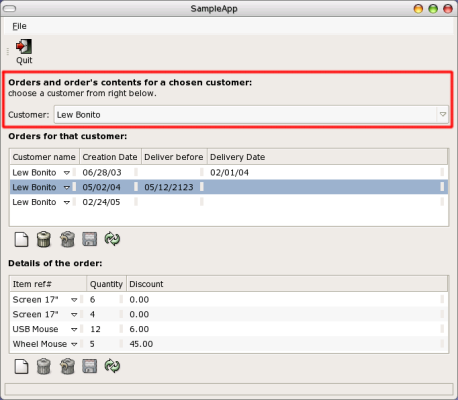
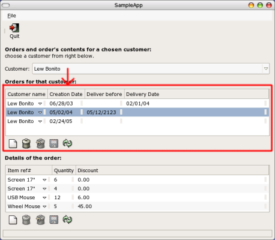
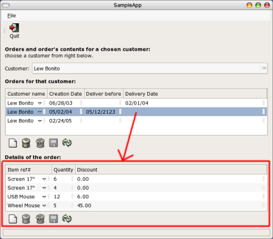

| Libgnomedb 3.0 Reference Manual |
|---|
The data dictionary is necessary for libgnomedb to operate. The generation of a data dictionary can be done through the library itself, but it's easier to use the 'gnome-database-properties' utility provided in the 'control-center/' directory.
To create the data dictionary, simply run 'gnome-database-properties', create or select a data source, and then choose to browse the contents of the database pointed by the data source. This application should have created an XML dictionary file in '~/.libgda/DICT_<data source name>_default.xml'. That file can then be copied or used directly. In the present case, the dictionary file is provided in the 'SampleApp.xml' file.
libgnomedb has widgets which work from SELECT queries which need to be provided and allows direct modification from the users through either a grid (GnomeDbGrid widget), a form (GnomeDbForm widget) or a matrix like (GnomeDbMatrix widget).
In this example, the first query to use is the query to get the orders when a customer is chosen; this query contains a single parameter which need to be assigned a customer Id value before it can be executed. The SELECT query is (note the syntax to specify a parameter named "Customer" between square brackets):
SELECT o.id,
c.name AS "Customer name",
o.creation_date AS "Creation Date",
o.delivery_before AS "Deliver before",
o.delivery_date AS "Delivery Date"
FROM customers c INNER JOIN orders o ON (c.id=o.customer)
WHERE o.customer= ## /*name:"Customer" type:"int4"*/
The other query which required is the query to list the products which are part of a given order:
SELECT p.ref AS "Item ref#",
p.name AS "Item name",
o.quantity AS "Quantity",
o.discount AS "Discount"
FROM products p INNER JOIN order_contents o ON (p.ref=o.product_ref)
WHERE o.order_id= ## /*name:"oid" type:"int4"*/
The following code extract shows the global definitions:
#include <libgnomedb/libgnomedb.h>
#define DICT_FILE "SampleApp.xml"
GdaDict *dict;
Here is the part of the code using the libgnomedb library. The complete code is available in the 'examples/SampleApp' directory. The main() function contains the following code, and basically loads the dictionary XML file (the DICT_FILE macro) and opens the connection to the DBMS; the main window is built using the create_app1() (generated by Glade itself), and in the prepare_main_window() function.
1 int
2 main (int argc, char *argv[])
3 {
4 GtkWidget *app1;
5 GError *error = NULL;
6 GdaConnection *server;
7
8 #ifdef ENABLE_NLS
9 bindtextdomain (GETTEXT_PACKAGE, PACKAGE_LOCALE_DIR);
10 bind_textdomain_codeset (GETTEXT_PACKAGE, "UTF-8");
11 textdomain (GETTEXT_PACKAGE);
12 #endif
13
14 gnome_program_init (PACKAGE, VERSION, LIBGNOMEUI_MODULE,
15 argc, argv,
16 GNOME_PARAM_APP_DATADIR, PACKAGE_DATA_DIR,
17 NULL);
18
19 /* loading XML file into dictionary */
20 dict = GDA_DICT (gda_dict_new ());
21 if (! gda_dict_load_xml_file (dict, DICT_FILE, &error)) {
22 gchar *str;
23
24 str = g_strdup_printf (_("Error loading file '%s':\n%s\n"), DICT_FILE,
25 error->message);
26 display_error_and_quit (str);
27 }
28 server = gda_dict_get_server (dict);
29 if (! gda_connection_open_connect (server, &error)) {
30 gchar *str;
31
32 str = g_strdup_printf (_("Can't open connection:\n%s\n"), error->message);
33 display_error_and_quit (str);
34 }
35
36 app1 = create_app1 ();
37 prepare_main_window (app1);
38 gtk_widget_show (app1);
39
40 g_signal_connect (G_OBJECT (app1), "delete_event",
41 G_CALLBACK (delete_event), NULL);
42 g_signal_connect (G_OBJECT (app1), "destroy",
43 G_CALLBACK (destroy), NULL);
44
45 gtk_main ();
46 return 0;
47 }
Among the noticeable lines of code are:
Lines 20 to 27: a GdaDict object is created and the dictionary file is loaded into memory; if an error occurs then the application quits;
Lines 28 to 34: the GdaConnection object related to the GdaDict object is used to open the connection to the database. Again if that fails, the application quits.
The prepare_main_window() function replaces some widgets built by Glade (as there is not yet any support in Glade for the libgnomedb's widgets) by some widgets provided by libgnomedb (this is why there are some gtk_table_attach() calls). Note that the GnomeDbLayout widget makes it easy to have the same result without writing a single line of code.
1 static void
2 prepare_main_window (GtkWidget *main_window)
3 {
4 GdaQuery *qu_cust, *qu_orders, *qu_contents;
5 GdaParameterList *data_set;
6 GtkWidget *form;
7 GtkWidget *table = lookup_widget (main_window, "table1");
8 GtkWidget *grid_orders, *grid_contents;
9 GdaQueryTarget *target;
10 GdaParameter *param1, *param2;
11 GdaEntityField *field, *src_field, *key_field;
12 gint colno;
13
14 #define CUSTOMERS_SQL "SELECT id, name FROM customers"
15 #define ORDERS_SQL "SELECT o.id, c.name AS \"Customer name\",
o.creation_date AS \"Creation Date\", o.delivery_before AS \"Deliver before\",
o.delivery_date AS \"Delivery Date\"
FROM customers c INNER JOIN orders o ON (c.id=o.customer)
WHERE o.customer= ## /*name:\"Customer\" type:\"int4\"*/"
16 #define CONTENTS_SQL "SELECT p.ref AS \"Item ref#\", p.name AS \"Item name\",
o.quantity AS \"Quantity\", o.discount AS \"Discount\"
FROM products p INNER JOIN order_contents o ON (p.ref=o.product_ref)
WHERE o.order_id= ## /*name:\"oid\" type:\"int4\"*/"
17
18 /* creating queries */
19 qu_cust = GDA_QUERY (gda_query_new_from_sql (dict, CUSTOMERS_SQL, NULL));
20 qu_orders = GDA_QUERY (gda_query_new_from_sql (dict, ORDERS_SQL, NULL));
21 qu_contents = GDA_QUERY (gda_query_new_from_sql (dict, CONTENTS_SQL, NULL));
22 /* TODO: test queries validity */
23
24 /* restrict possible values for the 'Customer' parameter */
25 field = gda_entity_get_field_by_name (GDA_ENTITY (qu_orders), "Customer");
26 src_field = gda_entity_get_field_by_name (GDA_ENTITY (qu_cust), "id");
27 g_object_set (G_OBJECT (field), "value-provider", src_field, NULL);
28 gda_query_add_param_source (qu_orders, qu_cust);
29
30 /* grid for the orders */
31 target = gda_query_get_target_by_alias (qu_orders, "o");
32 grid_orders = gnome_db_grid_new_with_select_query (qu_orders, target);
33 g_object_set (G_OBJECT (grid_orders), "title-visible", FALSE, NULL);
34 gtk_table_attach_defaults (GTK_TABLE (table), grid_orders, 0, 1, 3, 4);
35 gtk_widget_show (grid_orders);
36
37 /* hide the column corresponding to the o.id field which we don't want to appear in the grid widget */
38 key_field = gda_entity_get_field_by_name (GDA_ENTITY (qu_orders), "o.id");
39 gnome_db_data_widget_column_hide (GNOME_DB_DATA_WIDGET (grid_orders), 0);
40
41 /* Form for the customer's choice */
42 data_set = gnome_db_data_widget_get_params (GNOME_DB_DATA_WIDGET (grid_orders));
43 form = gnome_db_basic_form_new (dict, data_set);
44 gnome_db_basic_form_show_entries_actions (GNOME_DB_BASIC_FORM (form), FALSE);
45 gnome_db_basic_form_set_entries_auto_default (GNOME_DB_BASIC_FORM (form), FALSE);
46 gtk_table_attach (GTK_TABLE (table), form, 0, 1, 1, 2, GTK_FILL | GTK_EXPAND | GTK_SHRINK , 0, 0, 0);
47 gtk_widget_show (form);
48
49 /* grid for the order's contents */
50 target = gda_query_get_target_by_alias (qu_contents, "o");
51 grid_contents = gnome_db_grid_new_with_select_query (qu_contents, target);
52 g_object_set (G_OBJECT (grid_contents), "title-visible", FALSE, NULL);
53 gtk_table_attach_defaults (GTK_TABLE (table), grid_contents, 0, 1, 5, 6);
54 gtk_widget_show (grid_contents);
55
56 /* binding the order's choice to the order's contents */
57 data_set = gnome_db_data_widget_get_params (GNOME_DB_DATA_WIDGET (grid_contents));
58 field = gda_entity_get_field_by_name (GDA_ENTITY (qu_contents), "oid");
59 param1 = gda_parameter_list_find_param_for_user (data_set, field);
60
61 data_set = gnome_db_data_widget_get_data (GNOME_DB_DATA_WIDGET (grid_orders));
62 param2 = gda_parameter_list_find_param_for_user (data_set, key_field);
63
64 gda_parameter_bind_to_param (param1, param2);
65
66 /* free memory */
67 g_object_unref (qu_cust);
68 g_object_unref (qu_orders);
69 g_object_unref (qu_contents);
70 }
Code parts explanations:
Lines 14 to 16 define the SQL code used for each query;
Lines 19 to 21 create a GdaQuery object for each query defined just above. Note that each query should be tested to make sure the SQL code is valid and the elements it contains (tables, fields, etc) are all defined within the data dictionary.
-
Line 24 to 28 make it possible to select the 'Customer' parameter among a list of defined values, which are extracted from the "SELECT id, name FROM customers" query. This way instead of having to enter the Id of a customer, the user will be prompted with a combo box to select values from, outlined in red in the following screenshot:

Lines 25 and 26 retrieve GnomeDbQField objects (handled within each query) representing the "Customer" and "id" fields in the corresponding queries.
Line 27 instructs the "Customer" field which is a value (GdaQueryFieldValue) field to take its values from the "id" field which represents a table field (GdaQueryFieldField).
Line 28 forces the 'qu_orders' GdaQuery object to keep a reference on the 'qu_cust' object, as the example will release all the references to all the queries it created an the end of the function (lines 66 to 69).
-
Lines 30 to 35 create the GnomeDbGrid widget to display the orders for the selected customer (the contents of the 'qu_orders' query).
Line 31 acquires a pointer to the GdaQueryTarget object representing the 'orders' table (as alias "o") in the qu_orders query, as this is the 'orders' table wich will be modified to store user modifications.
Line 32 actually creates the grid widget using the 'qu_orders' and the target pointer as argument, which appears as outlined in red in the following screen shot:

Lines 39 instructs the grid widget to hide column number 0 as it corresponds to the 'orders.id' field and we don't want it to appear.
-
Lines 41 to 47 actually create the combo box to choose the customer from. The combo box could have been created using a GnomeDbCombo object but it would bave been necessary to make sure any change in the combo box induced a re-run of the 'qu_orders' query.
An easier solution is to ask the GnomeDbGrid widget about its list of parameters represented as a GdaParameterList object, which contains a list of GdaParameter parameters objects.
Line 42 requests the GdaParameterList representing the parameters required to execute the SELECT query which the 'grid_orders' GnomeDbGrid uses, and line 43 creates a GnomeDbBasicForm which handles the creation of any widget required for any parameter object in a data set.
Lines 44 and 45 set some properties of the new widget.
-
Lines 49 to 54 acutally create the GnomeDbGrid to display the contents of an order (the result of the 'qu_contents' query. This code is very similar to the one explained for the lines 30 to 35. The resulting widget is outlined in red in the following figure:

-
The notable exception though is that we want to 'bind' the two GnomeDbGrid widgets together: selecting an order in the orders grid must make the 'grid_contents' grid update its display. Again we use the GdaParameter parameters objects.
Lines 56 to 64 actually do that job. Lines 57 to 59 retrieve the GdaParameter object for the "oid" query parameter, and lines 61 and 62 do the same for the GdaParameter object where the order.id field of the selected order will be set.
Line 64 instruct the 'param1' parameter object to be 'bound' to the 'param2' parameter: any change to 'param2' will make 'param1' change for the same value (note that the reverse is not true).
In lines 66 to 68, we get rid of any reference to the GdaQuery objects we have created, as we won't use them (directly) anymore.
To compile an application using libgnomedb, proceed as with other Gnome libraries, using the pkg-config program and get the CFLAGS and LDFLAGS for the 'libgnomedb' library.
For applications using the auto* packages (as for this example), simply add the libgnomedb library in the configure.in file along with the other required libraries for the package.